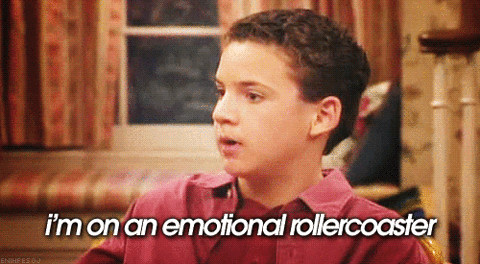

Living with adhd
emotional impact of ADHD
People with ADHD tend to have a hard time regulating their emotions. For instance, they report going from zero to 100 in just several seconds. They have tendancy to be oversensitve to rejection, teasing, criticism, or their own perception that they have failed or fallen short. Its called rejection-sensitive dysphoria. dysphoria means difficult to bear and response to failure is catastropic to them. percieved criticisms and withdrawal of love and respect hurt them deeply. For example, if they recieve a harsh criticism, that person may dwell on it for a longer time than most people. They focus on that one emotion and that may crowd out important info that might help him modulate his anger and regulate thier behavior.
They seem to be always tense and on edge. Even at thier home, they can never seem to be tense and can never relax. they are very sensitive to people disapproving of them. if it is bad at home imagine them being in the public. all the emotional pain is internalized turns into periods of sadness and loss of self esteem or verbal arguements if externalized. Their inability to handle rejection or emotional pain may lead them to become people pleasers who will do anything to make sure that friends, acquaintances, and family approveds of them even at their own expense. if that goes on for too long, they will lose track of what they want in life and become a chamleon. Sadly even when they try to follow thier own desires, they may be so scared of failure that they refuse to try anything unless they are assured of quick, easy, cand complete success. so much of life requires risk and going outside of your comfort zone. The fear of getting out your comfort zone leads to a very limited unfulfilling life of regrets that would haunt them forever.
Years of professional, educational, social failures and embarassments have a hand in leading to depression. bottomless, all-encompassing shame. They feel shame for having ADHD in the first place. They feel shame for procrastinating or not being as productive as they think they “should” be. They feel shame for forgetting things too quickly. They feel shame for missing deadlines or important appointments. They feel shame for not finishing tasks or following through.They feel shame for all the times they made themselves look stupid in social situation. They relive the blurted out inappropiate comments and offended someone. They feel the shame for how thier behavior has alienated them socially and has caused strain in their family relationships.
